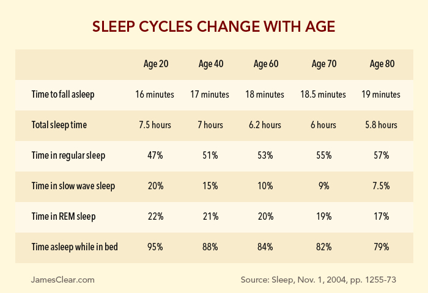
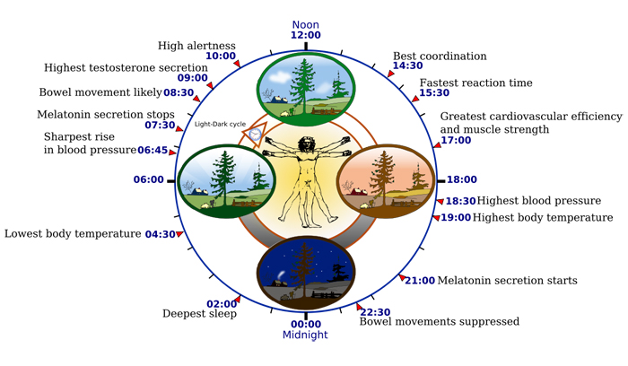

On February 13, 1972, Michel Siffre climbed into a cave in southwest Texas. It would be six months before he saw daylight again.
Siffre was a French scientist and a pioneer in chronobiology, which is the study of biological rhythms. The most well-known of these biological rhythms is the circadian rhythm, which controls the human sleep-wake cycle, and Siffre was on a mission to learn how, exactly, it worked.
Siffre’s life in the cave was spartan at best. He lived in a tent that sat on a small wooden platform with a bed, a table, a chair, and a phone that he could use to call his research team above ground. His underground home was equipped with a single lightbulb, which provided a soft glow to the piles of frozen food and 800 gallons of water nearby. There were no clocks or calendars, no way for him to discover what time it was or whether it was day or night. And this was how he lived, alone, for six months.
Within a few days, Siffre’s biological clock began to take over. He would later recall his experiments by writing, “My sleep was perfect! My body chose by itself when to sleep and when to eat. That’s very important. We showed that my sleep-wake cycle was not twenty-four hours, like people have on the surface of the earth, but slightly longer—about twenty-four hours and thirty minutes.” 1 On several occasions, Siffre’s body transitioned to a 48-hour sleep-wake cycle where he would stay awake naturally for 36 hours and then sleep for 12 hours. 2
Siffre’s work, along with the experiments of a handful of other researchers, helped kickstart a scientific interest in sleep that has resulted in sleep performance centers at major universities like Harvard and the University of Pennsylvania. Given that we spend almost 1/3 of our lives sleeping, it’s hard to believe the topic has only gained a large scientific following in recent years.
In this article, I’ll share the science of sleep and how it works, discuss why many people suffer from sleep deprivation without knowing it, and offer practical tips for getting better sleep, falling asleep fast, and having more energy.
Lack of Sleep: How Much Sleep Do You Need?
How much sleep do you really need? To answer that question, let’s consider an experiment conducted by researchers at the University of Pennsylvania and Washington State University.
The researchers began the experiment by gathering 48 healthy men and women who had been averaging seven to eight hours of sleep per night. Then, they split these subjects into four groups. The first group drew the short straw. They had to stay up for 3 days straight without sleeping. The second group slept for 4 hours per night. The third group slept for 6 hours per night. And the fourth group slept for 8 hours per night. In these final three groups — 4, 6, and 8 hours of sleep — the subjects were held to these sleep patterns for two weeks straight. Throughout the experiment the subjects were tested on their physical and mental performance. 3
Here’s what happened…
The subjects who were allowed a full 8 hours of sleep displayed no cognitive decreases, attention lapses, or motor skill declines during the 14-day study. Meanwhile, the groups who received 4 hours and 6 hours of sleep steadily declined with each passing day. The four-hour group performed worst, but the six-hour group didn’t fare much better. In particular, there were two notable findings.
First, sleep debt is a cumulative issue. In the words of the researchers, sleep debt “has a neurobiological cost which accumulates over time.” After one week, 25 percent of the six-hour group was falling asleep at random times throughout the day. After two weeks, the six-hour group had performance deficits that were the same as if they had stayed up for two days straight. Let me repeat that: if you get 6 hours of sleep per night for two weeks straight, your mental and physical performance declines to the same level as if you had stayed awake for 48 hours straight. 4
Second, participants didn’t notice their own performance declines. When participants graded themselves, they believed that their performance declined for a few days and then tapered off. In reality, they were continuing to get worse with each day. In other words, we are poor judges of our own performance decreases even as we are going through them. In the real world, well-lit office spaces, social conversations, caffeine, and a variety of other factors can make you feel fully awake even though your actual performance is sub-optimal. You might think that your performance is staying the same even on low amounts of sleep, but it’s not. And even if you are happy with your sleep-deprived performance levels, you’re not performing optimally.
The Cost of Sleep Deprivation
The irony of it all is that many of us are suffering from sleep deprivation so that we can work more, but the drop in performance ruins any potential benefits of working additional hours.
In the United States alone, studies have estimated that sleep deprivation is costing businesses over $100 BILLION each year in lost efficiency and performance. 5
As Gregory Belenky, Director of the Sleep and Performance Research Center at Washington State University puts it: “Unless you’re doing work that doesn’t require much thought, you are trading time awake at the expense of performance.”
And this brings us to the important question: At what point does sleep debt start accumulating? When do performance declines start adding up? According to a wide range of studies, the tipping point is usually around the 7 or 7.5 hour mark. Generally speaking, experts agree that 95 percent of adults need to sleep 7 to 9 hours each night to function optimally. 6
Here’s another way to say it: 95 percent of adults who get less than 7 hours of sleep on a routine basis will experience decreased mental and physical performance. According to Harvard Medical School, “The average length of time Americans spend sleeping has dropped from about nine hours a night in 1910 to about seven hours today.” And according to Dr. Lawrence Epstein at Harvard Medical School, 20 percent of Americans (1 in 5) get less than six hours of sleep per night.
Most adults should be aiming for eight hours per night. Children, teenagers, and older adults typically need even more.
How Sleep Works: The Sleep-Wake Cycle
The quality of your sleep is determined by a process called the sleep-wake cycle.
There are two important parts of the sleep-wake cycle:
- Slow wave sleep (also known as deep sleep)
- REM sleep (REM stands for Rapid Eye Movement)
During slow wave sleep the body relaxes, breathing becomes more regular, blood pressure falls, and the brain becomes less responsive to external stimuli, which makes it more difficult to wake up. This phase is critical for renewal and repair of the body. During slow wave sleep, the pituitary gland releases growth hormone, which stimulates tissue growth and muscle repair. Researchers also believe that the body’s immune system is repaired during this stage. Slow wave sleep is particularly critical if you’re an athlete. You’ll often hear about professional athletes like Roger Federer or LeBron James sleeping 11 or 12 hours per night. 7
As one example of the impact of sleep on physical performance, consider a study researchers conducted on the Stanford basketball players. During this study, the players slept for at least ten hours per night (compared to their typical eight hours). During five weeks of extended sleep, the researchers measured the basketball players accuracy and speed compared to their previous levels. Free throw shooting percentage increased by 9 percent. Three point shooting percentage increased by 9.2 percent. And the players were 0.6 seconds faster when sprinting 80 meters. If you place heavy physical demands on your body, slow wave sleep is what helps you recover. 8
REM sleep is to the mind what slow wave sleep is to the body. The brain is relatively quiet during most sleep phases, but during REM your brain comes to life. REM sleep is when your brain dreams and re-organizes information. During this phase your brain clears out irrelevant information, boosts your memory by connecting the experiences of the last 24 hours to your previous experiences, and facilitates learning and neural growth. Your body temperature rises, your blood pressure increases, and your heart rate speeds up. Despite all of this activity, your body hardly moves. Typically, the REM phase occurs in short bursts about 3 to 5 times per night.
Without the slow wave sleep and REM sleep phases, the body literally starts to die. If you starve yourself of sleep, you can’t recover physically, your immune system weakens, and your brain becomes foggy. Or, as the researchers put it, sleep deprived individuals experience increased risk of viral infections, weight gain, diabetes, high blood pressure, heart disease, mental illness, and mortality.
To summarize: slow wave sleep helps you recover physically while REM sleep helps you recover mentally. The amount of time you spend in these phases tends to decrease with age, which means the quality of your sleep and your body’s ability to recover also decrease with age.
Age-Related Sleep Changes
According to Harvard Medical School researchers, “As people age, it takes longer to fall asleep, a phenomenon called increased sleep latency. And sleep efficiency–the percentage of time spent asleep while in bed–decreases as well.”

Based on my calculations of the above data, the average 80-year-old gets a whopping 62 percent less slow wave sleep than the average 20-year-old (20 percent of the average sleep cycle versus 7.5 percent). There are many factors that impact the aging of body tissues and cells, but it stands to reason that if your body gets less slow wave sleep to restore itself each night, then the aging process will accelerate as a result.
In other words, it seems reasonable to say that getting good sleep is one of your best defenses against aging quickly.
How to Recover When You Don’t Get Enough Sleep
“At any age, most adults need seven and a half to eight hours of sleep to function at their best. Since older people often have trouble attaining this much sleep at night, they frequently supplement nighttime sleep with daytime naps. This can be a successful strategy for accumulating sufficient total sleep over a 24-hour period. However, if you find that you need a nap, it’s best to take one midday nap, rather than several brief ones scattered throughout the day and evening.”
— Harvard Medical School 9
As it turns out, the body is incredibly adept at making up for a short-term lack of sleep. In fact, even if you got a brutal 2 or 4 hours of sleep last night, your body can usually recover fully if you get a solid 9 or 10 hours of sleep tonight. Your body will simply spend more time in REM and slow wave sleep cycles the second night to make up for the first. In other words, the two main sleep cycles are largely influenced by the amount and type of sleep you had during the previous night.
There is no need to worry about optimizing how much REM or slow wave sleep you get. Your body is smarter than you are and because it makes adjustments based on previous sleep cycles, you can’t really force yourself to get more REM sleep, for example, during a particular sleep session. All you can do is make sure you get enough sleep and then let your body do the rest. This is particularly important as you age because the percentage of time spent in REM and slow wave sleep decreases as you get older. As an example, a 60-year-old may need to sleep for 10 hours to get the same about of REM sleep that a 20-year-old can get in 7 hours. To put it simply: there is no substitute for sleeping.
There is a limit on this recovery process, of course. Your body will do the best it can, but it will never be able to turn a deficit into a surplus. If you want to recover from a night of little sleep, you need to follow it with more sleep than usual.
The Circadian Rhythm
What is your sleep-wake cycle dictated by?
Answer: the circadian rhythm. The circadian rhythm is a biological cycle of different processes that happen over a time span of about 24 hours.

Here are some key points in the typical 24-hour cycle:
- 6 A.M. Cortisol levels increase to wake your brain and body
- 7 A.M. Melatonin production stops
- 9 A.M. Sex hormone production peaks
- 10 A.M. Mental alertness levels peak
- 2:30 P.M. Best motor coordination
- 3:30 P.M. Fastest reaction time
- 5 P.M. Greatest cardiovascular efficiency and muscle strength
- 7 P.M. Highest blood pressure and body temperature
- 9 P.M. Melatonin production begins to prepare the body for sleep
- 10 P.M. Bowel movements suppressed as the body quiets down
- 2 A.M. Deepest sleep
- 4 A.M. Lowest body temperature
Obviously, these times are not exact and merely display the general pattern of the circadian rhythm. The exact times of your circadian rhythm will vary based on daylight, your habits, and other factors.
The circadian rhythm is impacted by three main factors: light, time, and melatonin.
Light. Light probably the most significant pace setter of the circadian rhythm. Staring into a bright light for 30 minutes or so can often reset your circadian rhythm regardless of what time of day it is. More commonly, the rising of the sun and light striking your eyes triggers the transition to a new cycle.
Time. The time of day, your daily schedule, and the order in which you perform tasks can all impact your sleep-wake cycle.
Melatonin. This is the hormone that causes drowsiness and controls body temperature. Melatonin is produced in a predictable daily rhythm, increasing after dark and decreasing before dawn. Researchers believe that the melatonin production cycle help keep the sleep-wake cycle on track.
How to Sleep Better
Now that we understand how sleep works, let’s talk about some practical strategies for getting better sleep.
Avoid caffeine. If you’re having trouble falling asleep, eliminating caffeine from your diet is a quick win. If you can’t go without your morning cup of coffee, then a good rule of thumb to keep in mind is “No coffee after noon.” This gives caffeine enough time to wear off before bed time.
Stop smoking or chewing tobacco. Tobacco use has been linked to a long line of health issues and poor sleep is another one on the list. I don’t have any personal experience with tobacco use, but I have heard from friends who have quit successfully that Allen Carr’s Easy Way to Stop Smoking book is the best resource on the topic.
Use the bedroom for sleep and sex only. Is your bedroom designed to promote good sleep? The ideal sleeping environment is dark, cool, and quiet. Don’t make your bedroom a multi-purpose room. Eliminate TVs, laptops, electronics, and clutter. These are simple ways to improve the choice architecture of your bedroom, so that sleep is easier and distraction is harder. When you go to the bedroom, go there to sleep.
If you want even more strategies for how to sleep better, check out my article 3 Ways to Improve Your Sleep.
Natural Sleep Aids
Exercise. There are too many benefits to exercise to list them all here. When it comes to sleep, exercise will make it easier for your brain and body to power down at night. Furthermore, obesity can wreak havoc on your sleep patterns. The role of exercise only becomes more important with age. Fit middle-aged adults sleep significantly better than their overweight peers. One caveat: avoid exercising two to three hours before bedtime as the mental and physical stimulation can leave your nervous system feeling wired and make it difficult to calm down at night.
Temperature. Most people sleep best in a cool room. The ideal range is usually between 65 to 70 degrees Fahrenheit (18 to 21 degrees Celsius).
Sound. A quiet space is key for good sleep. If peace and quiet is hard to come by, try controlling the bedroom noise by creating “white noise” with a fan. Or, use earplugs (here’s a good pair).
Alcohol. This one is a slippery slope. It is true that having a drink before bed — a “night cap” — often does help people fall asleep fast. However, while it makes it easier to fall asleep, it actually reduces the quality of your sleep and delays the REM cycle. So you fall asleep faster, but it’s possible that you’ll wake up without feeling rested. It’s probably best to improve your sleep through other methods before resorting to alcohol to do the job.
How to Fall Asleep Fast
Stick to a regular schedule. The body loves ritual. The entire circadian rhythm we laid out earlier is one big, daily routine. Go to bed and wake up around the same time each day.
Develop a “power down” ritual before bed. The light from computer screens, televisions, and phones can hinder the production of melatonin, which means your body isn’t preparing the hormones it needs to enter the sleep phase. Specifically, it is the blue wavelength of light that seems to decrease melatonin production. Developing a “power down” routine where you shut off all electronics an hour or two before sleep can be a big help. Additionally, working late at night can keep your mind racing and your stress levels high, which also prevents the body from calming down for sleep. Turn off the screens and read a book instead. It’s the perfect way to learn something useful and power down before bed. (Another option is to download an app called f.lux, which reduces the brightness of your screen closer to bedtime.)
Use relaxation techniques. Researchers believe that at least 50 percent of insomnia cases are emotion or stress related. Find outlets to reduce your stress and you’ll often find that better sleep comes as a result. Proven methods include daily journaling, deep breathing exercises, meditation, exercise, and keeping a gratitude journal (write down something you are thankful for each day).
Use strategic naps. Generally speaking, one nap in the early afternoon is the best way to add napping to your sleep cycle. This is particularly useful if you aren’t getting enough sleep each night as your body may be able to make up the deficit during your nap.
How to Have More Energy in the Morning
The best way to have more energy is to get enough sleep, but you can also…
Drink a large glass of water in the morning. Your body just went 6 to 8 hours without any liquid. If you are feeling lethargic and groggy in the morning, you may often be slightly dehydrated. The first thing I do when I wake up is drink a large, cold glass of water.
Start the day in the sunlight. Sunshine is the new coffee. Getting sunlight in your morning routine is critical for establishing your circadian rhythm and waking your brain and body for the day. This is why, in the words of my friend Ben Greenfield, “You may find you need none or very little coffee in the summer or in times of high sun exposure, but you’re a complete monster if you don’t get your morning cup of coffee in the grey winter months.” 10
Final Thoughts on Sleep
Cumulative sleep debt is robbing companies of billions of dollars in revenue. It’s robbing individuals of sharper mental performance. It’s preventing athletes from performing at their best. And it’s a barrier between you and optimal performance.
The answer is simple, but remarkably underrated in our productivity-obsessed culture: get more sleep.
The ideas in this article offer a variety approaches on how to get better sleep. If you’re looking for more practical strategies on how to create better sleep habits (or better habits in general), then read my book Atomic Habits or browse my best articles on behavior change and habit formation.
You owe it to yourself to develop better sleep habits. Your body and mind will thank you for it.11
Siffre, Michel. “Six Months Alone in a Cave,” National Geographic (March 1975), 426-435.
Functional and Economic Impact of Sleep Loss and Sleep-Related Disorders
The remaining 5 percent are due to genetic variations that allow them to perform optimally on less sleep. Obviously, it is unlikely that you or I have been dealt such a favorable genetic hand.
Don’t you find it interesting that many of the best athletes in the world sleep at least 10 hours per night? Wouldn’t you assume that if anyone had access to the latest biohacking technology and advanced sleeping tactics, it would be the world’s greatest athletes? If there was any group of people who could afford the research and money to purchase the best ways to hack their sleep and get more done in less time, it would be this group. They could use this time for increased training, additional practice, and so on. And yet, sleeping more is what provides them greater value. I mention this because it can be easy for us to look for a quick fix, a “biohack” that allows us to somehow master the puzzle of sleep and get more done. But when you look at the world’s greatest performers you see that the answer is very simple: sleep more
The Effects of Sleep Extension on the Athletic Performance of Collegiate Basketball Players
Improving Sleep: A guide to a good night’s rest, a Harvard Medical School publication
The Last Resource You’ll Ever Need To Get Better Sleep, Eliminate Insomnia, Beat Jet Lag and Master The Nap by Ben Greenfield
Thanks to Sam Sager for his tireless help researching this article and to Scott Britton for his slideshow on sleep strategies.